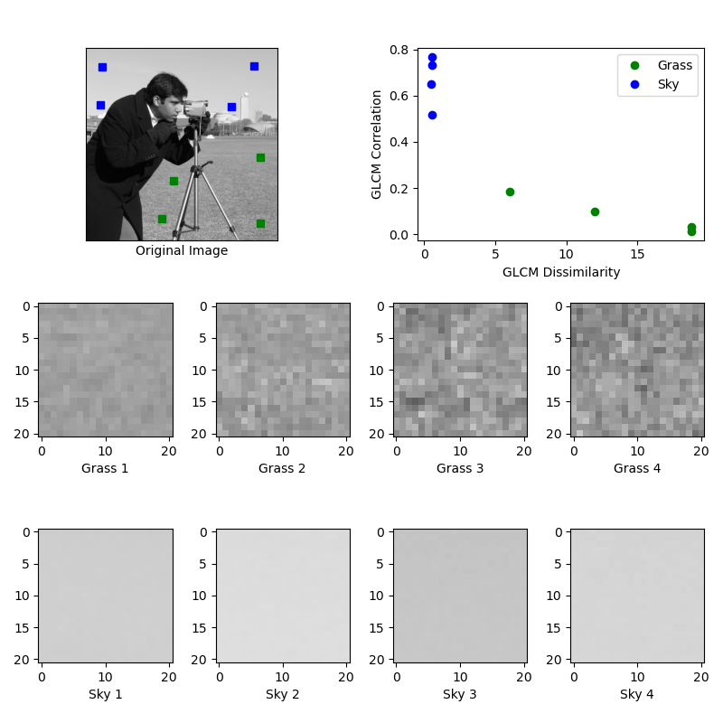
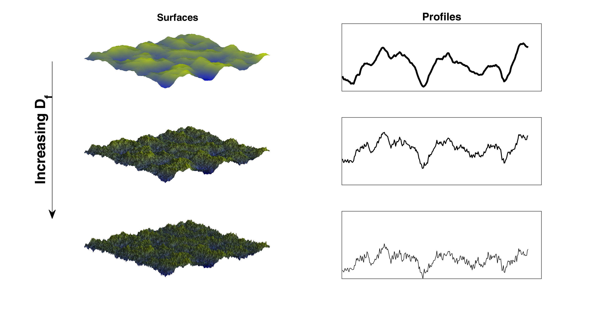
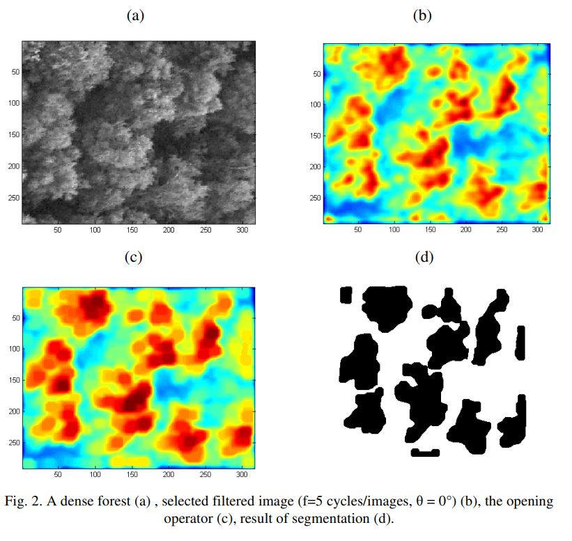
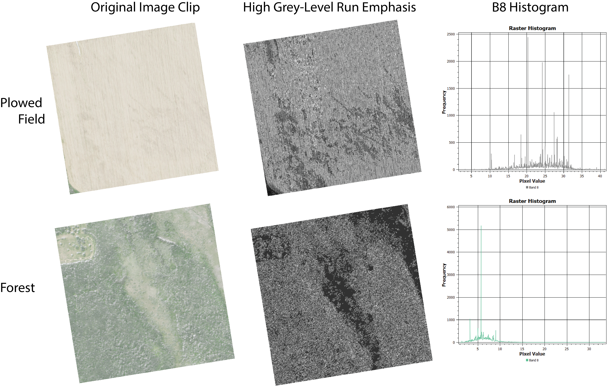

Texture Metrics
Texture
- Texture a function of spatial variation of the brightness intensity of the pixels.
- Spatial resolution is important when identifying textural signatures.
- The significance of texture decreases with spatial resolution.
1st Order v. Second Order
- 1st order: "operate on the counts, orÿoccurrences, of the different digital number (DN) values within a moving window/kernel"
- 2nd order: ÿanalyze the relationship between pixel pairs.
Approaches
- Structured Approaches
- Statistical Approaches
- Filter Approaches
- Modeling Approaches
Basic Statistical Approaches
- Range - difference between maximum and minimum intensity values minimum intensity values within a window
- Variance - the sum of the squares of the differences between the intensity of the central pixel and its neighbours
Basics
- Texture consists of texture primitives called textels
- If texels are small and tonal differences between texels are large a fine texture results
- "If texels are large and consist of several pixels, a coarse texture results"
Grey Level Co-Occurance (GLCM)
- is a marix that is defined overany imagery to be the distribution of co-occurring pixel values (grayscale values, or colors) at a given offset
- computes how often pairs of pixels with a specific value and offset occur in the image
- Best practices suggest that you should compute GLCM for multiple distances D and angles (theta)
- See: Haralick et al. 1973
Grey Level Co-Occurance (GLCM)

Numeric Features of GLCM
- Computed from the cooccurrence matrix that can be used to represent the texture more compactly.
- Maximum Probability - largest entry in the matrix, and corresponds to the strongest response
- Contrast - measures the local variations in the gray-level co-occurrence matrix
- Correlation - measures the joint probability occurrence of the specified pixel pairs
- Energy (Second Moment) - provides the sum of squared elements
- Homogeneity - measures the closeness of the distribution of elements
- Entropy - measure of image information content, which is interpreted as the average uncertainty of information source
Fractals
- Fractals are infinitely complex patterns that are self-similar across different scales
- Fractal geometry can be used to discriminate between textures
- Fractal models represent exponential changes in measured quantities with changes in length scale
- See Mandelbrot (1975)

Fractals

Gabor Filters
- is inspired by a multi-channel filtering theory for processing visual information in the human visual system
- a linear filter used for texture analysis, which essentially means that it analyzes whether there is any specific frequency content in the image in specific directions in a localized region around the point or region of analysis
- When a Gabor filter is applied to an image, it gives the highest response at edges and at points where texture changes.
- Define: orientation (theta), spatial frequency (lambda) and aspect ratio (gamma)
Gabor Filters

Haralick Texture in Orfeo Toolbox
The Haralick texture features are functions of the normalized GLCM, where different aspects of the gray level distribution in the ROI are represented.
OTB Haralick Parameters
- X Radius - window radius in x direction
- Y Radius - window radius in y direction
- X Offset - x of D vector
- Y Offset - y of D vector
- Image Min/Max - minimum and maximum intensity values
- Histogram - number of bins
- Output is a multiband raster whose indiviual bands each correspond to one metric.
OTB Harlick Metrics
| Simple | Advanced | Higher |
| Energy (texture uniformity) Entropy (measure of randomness of intensity image) Correlation (how correlated a pixel is to its neighborhood) Inverse Difference Moment (measures the texture homogeneity) Inertia (intensity contrast between a pixel and its neighborhood) Cluster Shade Cluster Prominence Haralick Correlation |
Mean Variance (measures the texture heterogeneity) Dissimilarity Sum Average Sum Variance Sum Entropy Difference of Entropies Difference of Variances Information Correlation 1 Information Correlation 2 |
Short Run Emphasis (measures the texture sharpness) Long Run Emphasis (measures the texture roughness) Grey-Level Nonuniformity Run Length Nonuniformity Run Percentage (measures the texture sharpness homogeneity) Low Grey-Level Run Emphasis High Grey-Level Run Emphasis Short Run Low Grey-Level Emphasis Short Run High Grey-Level Emphasis Long Run Low Grey-Level Emphasis Long Run High Grey-Level Emphasis |
Example from OTB Haralick
-
